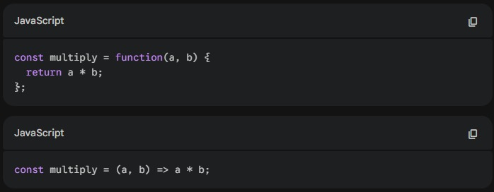
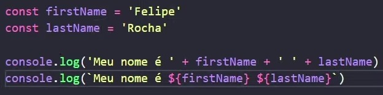
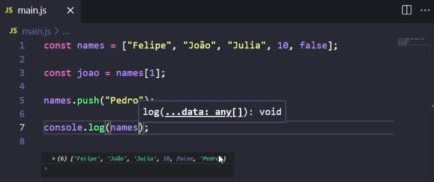
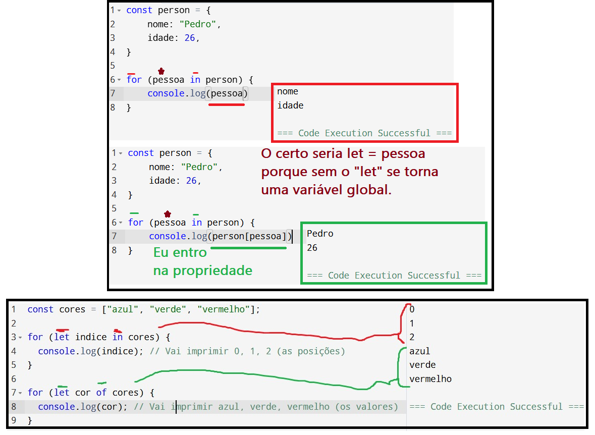
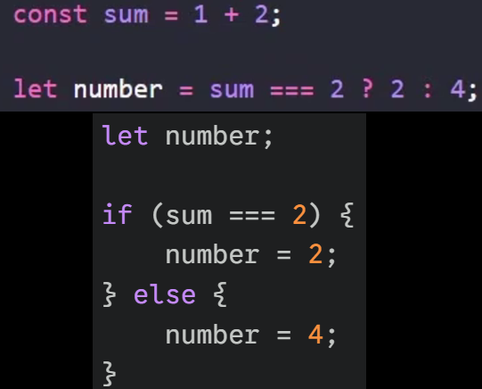
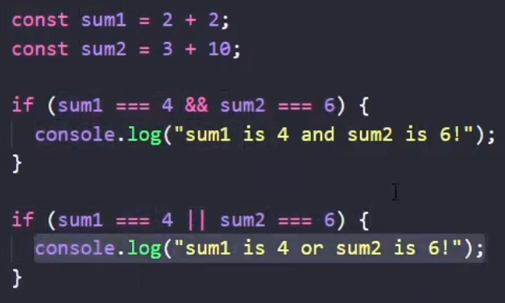
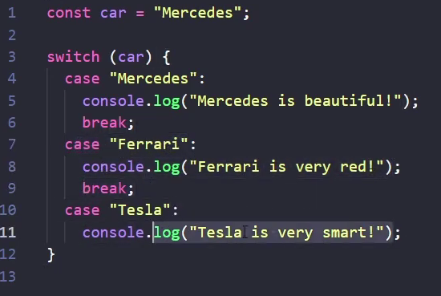
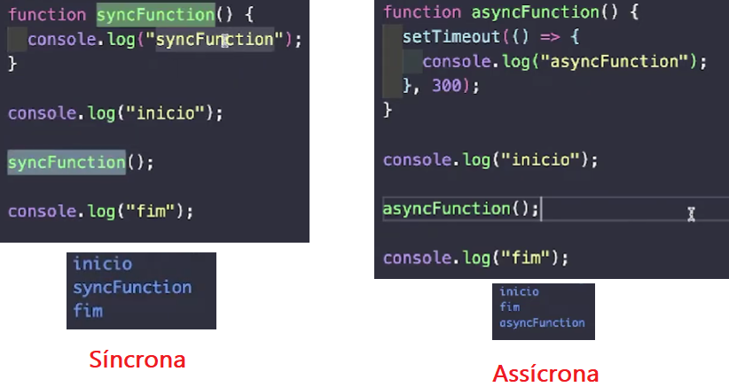
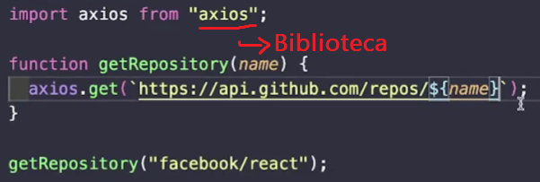
<script> src="https://cdn.jsdelivr.net/npm/axios/dist/axios.min.js"></script>
<script>
// Agora você não usa 'import', o axios já está disponível globalmente
axios.get('https://api.github.com/repos/facebook/react');
</script>
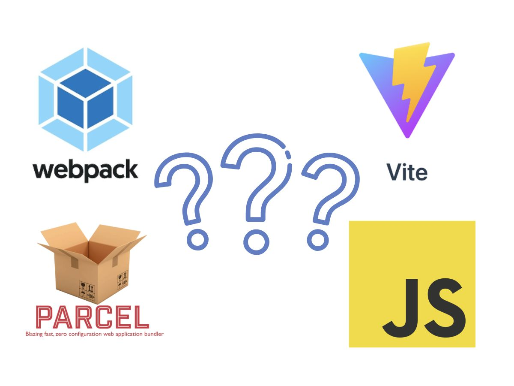
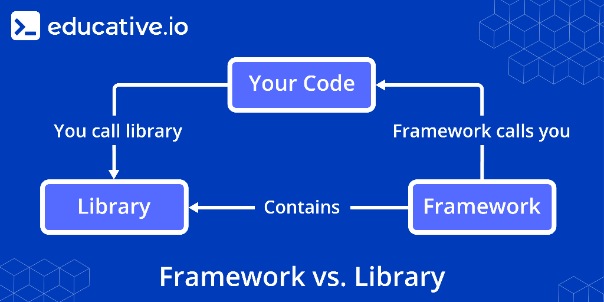
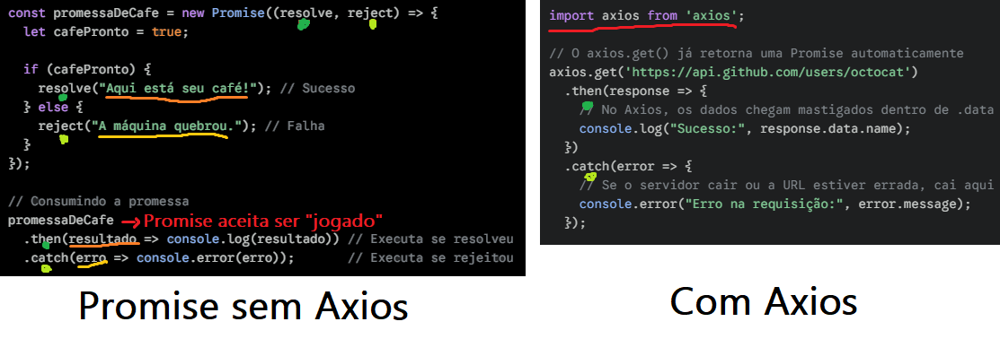
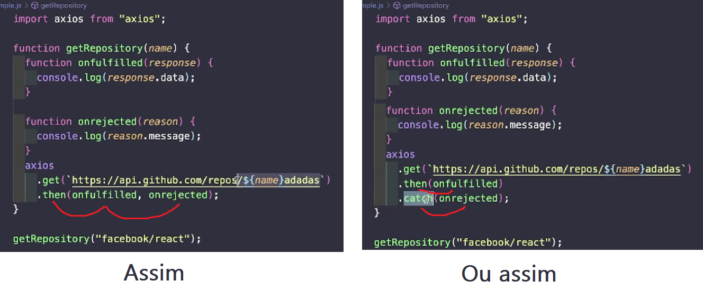
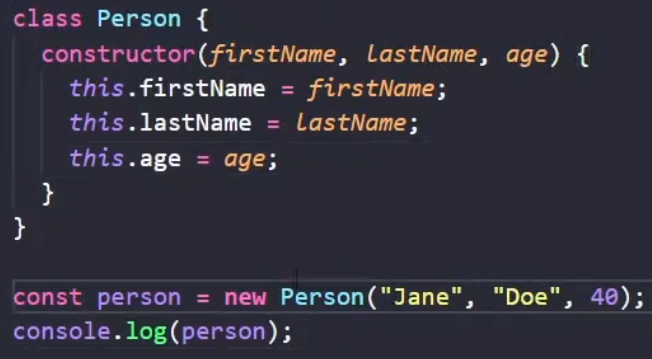